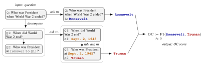
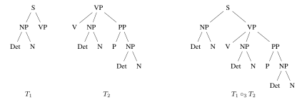
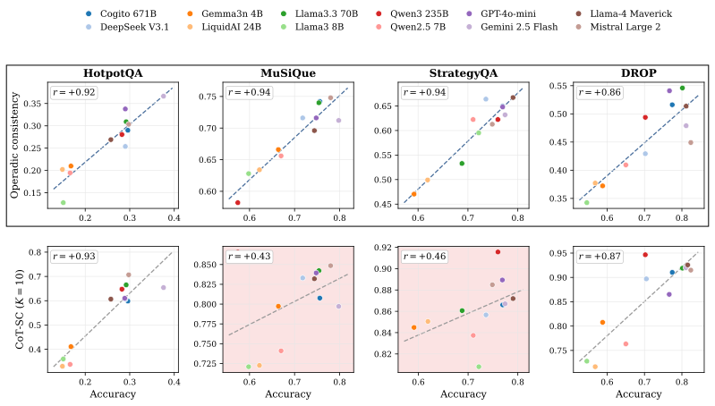
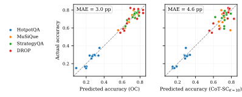

Checking a model's work without an answer key
If you ask a language model, Who was President when World War 2 ended?, it might say Roosevelt. If you ask the same model when the war ended, and then who was President on that date, it might say September 2, 1945, and Truman. Truman is the correct answer, and the fact that this hypothetical model's two answers disagree should make us wary of trusting the model's original answer.
My collaborators and I turned this idea into an inference-time signal called operadic consistency, or OC. This is the subject of two papers, linked at the top of this post: an empirical paper, just accepted at NeurIPS 2026, and a theoretical companion, presented at ICML 2026 workshops, which explains the relationship between the mathematical theory of operads and various notions of compositionality in computer science and machine learning.
This work gives a new point of view on an area called chain-of-thought monitorability. The idea here is that modern models increasingly show their work (for instance, thinking models produce long reasoning traces before answering, and agents narrate the steps they take). An obvious goal would be to oversee these systems by reading how a model reached its answer, and using this trace to detect when the model has gone wrong (Korbak et al., 2025).
But reading only helps if the reasoning on the page is the reasoning that produced the answer, and there is growing evidence that it often is not (Lanham et al., 2023; Chen et al., 2025). A model can write a sensible-looking chain of steps and then give an answer those steps do not support. It can also give a right-looking answer without having done the composition the question requires, a failure documented at scale as the compositionality gap (Press et al., 2023). In practice, there is often no answer key to check against. The step-by-step route in our opening example is a miniature chain of thought, and OC asks whether a model's own steps, re-asked independently, actually lead to the answer it gave.
Two routes to an answer
In general, suppose that $Q$ is a question, which can be decomposed into a system $(Q_i)$ of sub-questions. As in the example at the beginning, can we tell, without any labels, whether to trust a model's answer to $Q$ (the direct answer), by comparing it to the result of asking the model the sub-questions $Q_i$ in turn and substituting each answer into the next (the decomposed answer)? Figure 1 shows this for the opening example.

The name operadic consistency comes from a branch of mathematics, explained in the next section.
A short detour: what is an operad?
(Skippable)
Operads organize objects that behave like functions with several inputs and one output. To get into this, let's literally think about such functions, say from several copies of $\mathbb{R}$ to $\mathbb{R}$. The one operation we can perform is composition. If $f$ takes $k$ inputs and $g$ takes $\ell$, then feeding the output of $g$ into the $i$-th input of $f$ gives
$$f\Bigl(\underbrace{-,\ldots,-}_{i-1},\; g\bigl(\underbrace{-,\ldots,-}_{\ell}\bigr),\; \underbrace{-,\ldots,-}_{k-i}\Bigr),$$
an operation with $k+\ell-1$ inputs, which we write as $f \circ_i g$. Iterated compositions are unambiguous: an expression like
$$f(\ldots, g(\ldots, h(\ldots), \ldots), \ldots)$$
means the same thing whether we first plug $g$ into $f$ and then feed in $h$, or first plug $h$ into $g$ and then feed the result into $f$. An operad $\mathcal{O}$ is an abstraction of this structure -- it consists of a (1) a set $\mathcal{O}(k)$ of "operations with $k$ inputs" for each $k$, (2) composition maps $\circ_i\colon \mathcal{O}(k)\times\mathcal{O}(\ell)\to\mathcal{O}(k+\ell-1)$, and (3) the requirement that composition be associative in the sense just described.
Operads don't have to consist of functions. Fix a context-free grammar, and consider derivation trees whose leaves are non-terminals. These form an operad: composition grafts the root of one tree onto a leaf of another with the same label (Figure A). Strictly speaking this is a so-called "colored" operad, since every input and output carries a type, here a non-terminal, and labels must match.

An algebra over an operad turns each abstract operation into an actual function, in a way that respects composition.
For the grammar operad, sending each non-terminal to the set of strings it generates, and each tree to concatenation, gives an algebra: feeding "The", "dog", "saw", "the", "cat", "in", "the", "park" into the composite tree in Figure A returns "The dog saw the cat in the park". The same operad has other algebras, which count derivations or compute their probabilities. That is classical weighted parsing, recast as "one operad, many algebras."
Questions with blanks behave the same way. Who was President at (blank)? is an operation with one input, and When did World War 2 end? has none. Plugging the second into the first gives Who was President when World War 2 ended? We call this structure the questions operad: its operations are questions with $k$ blanks, and composition is substitution into a blank.
A language model almost gives an algebra over the questions operad: to evaluate a question with blanks, fill in the blanks and ask the model. The algebra axiom then says that asking a composite question should give the same answer as answering its parts and substituting. Operadic consistency measures, one question at a time, whether a model satisfies this.
What we found
We ran twelve instruction-tuned models, from 4 billion to 671 billion parameters and including both open-weight and closed models, on four multi-hop question-answering datasets: HotpotQA, MuSiQue, StrategyQA, and DROP. For these models, the decompositions came from human annotations, including the Break dataset.
The first thing we looked at was whether a model's overall rate of consistency tracks its accuracy -- and it does, closely. Across models, the correlation between OC and accuracy was between 0.86 and 0.94 on every dataset. The most common label-free baseline, chain-of-thought self-consistency (Wang et al., 2023), which samples several answers and checks how often they agree, did just as well on two of the datasets, but fell to about 0.45 on the other two (Figure 2).

That correlation is strong enough to be useful on its own: measure a new model's OC rate on a dataset (the fraction of questions on which its two answers agree), and you can predict its accuracy there to within about three percentage points on average, with no labels for the new model (Figure 3).

The second question was whether OC tells us anything per question that existing signals do not -- in fact, it does. In regressions that already include self-consistency and semantic entropy (for the latter, see Kuhn et al., 2023), OC remained a large and highly significant predictor of whether an answer is correct, on every dataset. OC costs three model calls per question, the same as three-sample self-consistency, and adding it to that baseline improved our ability to separate right answers from wrong ones on all four datasets, with AUROC gains between 0.09 and 0.16.
The clearest case is when sampling looks most confident. Among questions where all ten of a model's sampled answers agreed, the answer was right 88% of the time when OC also agreed, but only 56% of the time when OC objected. The questions OC flagged there were about a fifth of all questions, and they held about two thirds of the errors that unanimous agreement would otherwise have hidden.
These experiments deal only with two-step chains, which is the simplest form of OC. In general a question decomposes into a tree of sub-questions -- and even a DAG, though that takes us past the expressive capabilities of operads, since one sub-answer can then feed several later steps. A model that reasons compositionally should give the same answer however much of the tree is collapsed before asking. So the check should keep working on deeper trees. On MuSiQue questions that take three and four reasoning steps (150 at each depth, twelve models), answers where the two routes agreed were right 43 and 37 percentage points more often than answers where they disagreed, with AUROC 0.77 and 0.67. (We plan to include this experiment in our camera-ready version of the empirical paper.)
A general recipe
The operadic interpretation of a QA model is what led us to the notion of OC, and it also suggests a recipe:
- Start with a notion people already use, here question decomposition.
- Understand the abstract structure underlying it.
- Read off a property that a perfect model would satisfy exactly.
- Then measure how far a real model falls short, and use this discrepancy as a signal.
OC is the first signal we have constructed using this recipe.
Reading the model's own chain of thought
The experiments so far used decompositions written by people. Thinking models give us something more interesting: they produce a reasoning trace, which can be used as raw material for producing a particular decomposition of the original question. For five reasoning models, we extracted two-step chains of questions from the reasoning trace, then applied OC to this decomposition.
The signal held up. Combined with self-consistency, OC improved the separation of right and wrong answers in all 16 settings we tested (four datasets, two sampling budgets, two metrics), with the improvement clearly distinguishable from zero in 12 of them. This is the setting we find most promising, because extracting decompositions from the reasoning trace is what makes it possible to bring OC to bear on SOTA models and tasks, as in the preliminary work described below.
OC gives a different perspective on chain-of-thought monitoring. A chain-of-thought monitor reads the trace and asks whether anything in it looks wrong. OC asks a different, complementary question: whether the trace is actually doing the work it claims to -- using only the final answer, rather than evaluations of the intermediate steps.
We are now taking the check to harder tasks, such as graduate-level science questions and competition mathematics, where no decomposition is supplied and the model's own reasoning is the only source of one. There we extract a small graph of sub-questions from the trace, re-solve the branches that feed the final step, and ask whether the re-derived answer matches the one the model committed to. In preliminary results on eight open-weight reasoning models and six hard tasks, adding this check to self-consistency improved the separation of right and wrong answers for every model on every task, with average AUROC gains of about 0.08 to 0.12 per task. The check costs a few extra generations, and we have not yet ruled out that part of the gain comes simply from asking again.
Related work
The intuition that a model's direct and step-by-step answers should agree has a history. Chen et al. (2024) named it compositional consistency and showed that large models often violate it. Gandhi et al. (2022) built compositional-consistency metrics over graphs of sub-questions for video question answering. Yang et al. (2024) used agreement between direct and decomposed answers as a reliability score for vision-language models, and Madhwal et al. (2026) used disagreement between direct and decomposed prompting to help language models decide when to abstain. What we add is a mathematical framework in which the check is one instance of a general structure, a large cross-model study that compares it head to head with the standard label-free signals, including at matched numbers of model calls, and an extension to decompositions taken from a reasoning model's own chain of thought.
Conclusions
Consistency between two ways of asking the same question turns out to be a cheap and surprisingly strong signal of whether a model's answer can be trusted. It tracks accuracy across models, it adds information that sampling-based signals miss, and it carries over to the setting where the decomposition comes from the model's own reasoning.
There are important limitations. OC only applies to questions that decompose into sub-questions, and it says little about open-ended tasks such as planning. It costs extra model calls: three per question, the same as a small self-consistency budget, and combining the two signals costs more than either alone. Agreement is evidence, not proof: a model can be consistently wrong, and when the decomposition is extracted from the model's own trace, a poor extraction can create a spurious disagreement. Most of our experiments use multi-hop question answering, and how far the signal extends to agents acting over long horizons is an open question.
We think checks like this are a useful complement to reading chains of thought: not a replacement for monitoring, but a way to test whether what a model says it did is what actually produced its answer. We are especially interested in running the check at intermediate points of long agent trajectories, in larger and branching trees of questions, and in whether consistency is visible inside the model before it answers. If you are working on chain-of-thought monitoring or reasoning faithfulness, please get in touch!
Acknowledgments
This material is based upon work supported by DARPA through the Artificial Intelligence Quantified (AIQ) program, under Cooperative Agreement No. HR00112520028. The views, opinions, and/or findings expressed are those of the authors and should not be interpreted as representing the official views or policies of the Department of Defense or the U.S. Government. My thanks to the Allen Institute for AI for its hospitality during this collaboration.